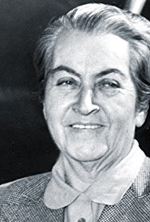

GABRIELA MISTRAL
Selma Lagerlöf mất năm 1940; chín năm sau Sigrid Undset từ trần. Năm 1957, tới phiên Gabriela Mistral là một nhân vật nổi tiếng nhất ở châu Mỹ La tinh. Khi bà mất, trên tờ báo Le Monde, Jacques Grignon Dumoulin viết:
“Gabriela Mistral mất là văn giới châu Mỹ La tinh mất ngôi sao chói lọi, một nữ sĩ thành tâm yêu hòa hình mà đứng trên tất cả các đảng phái nhất là mất một người đàn bà sức mạnh tinh thần và trí tuệ vượt xa thân xác, như vậy không có nghĩa là bà ốm yếu, nhẹ cân, mà chỉ có nghĩa là nữ giáo viên dạy ở một làng hẻo lảnh ở miền đồng ruộng Chili, được giải nhất cuộc thi Thơ ở Santiago năm hai mươi tám tuổi đó, đã lưu danh trên thế giới chẳng phải chỉ nhờ thi tài, mà còn nhờ trí tuệ phi thường đem ra phục vụ một cách nhiệt tâm, tận tình cho tất cả cái gì có tính cách nhân bản
Câu chuyện bắt đầu ở miền bắc Chili, trong một làng tại thung lũng Elqui.
Thầy giáo Jeronimo Godoy Villanueva ở đó với vợ tên là Emelina Molina Alcayaga. Hai vợ chồng gốc gác ở xứ Basque (1), trong dòng máu Y Pha Nho có pha ít máu da đỏ.
Jeronimo thích đi thơ thẩn, uống rượu và tán gái hơn là dạy học. Thỉnh thoảng kiếm cớ để bỏ nhà lêu lổng. Vậy mà khi Lucilla ra đời thì thầy giáo xúc động và làm một bài hát ru con. Bài hát đó là di sản duy nhất thầy để lại cho con và khi con gái chưa đầy bốn tuổi, thầy bỏ nhà đi nơi khác. Lâu lâu cũng đảo về thăm vợ con. nhưng vẫn tính nào tật nấy: mồm mép lém lỉnh, ham nhậu nhẹt, chơi bời, được ít bữa rồi lại dông đi đâu mất biến, cứ như vậy cho tới khi thầy dông luôn qua thế giới bên kia.
Lucilla lớn lên, thành một thiếu nữ. Thân mẫu cô phải hy sinh nhiều lắm mới cho cô vô trường Sư phạm Vicuna được. Nữ sinh bé nhỏ đó bắt đầu mê ngay văn chương, cao hứng làm thử mấy bài thơ đăng trên vài tờ nhật báo trong miền.

Hồi mười lăm tuổi, cái tuổi còn vô tư, cô được bổ làm giáo viên phụ, dạy trẻ con trong những miền quê nghèo nhất. Cô hy sinh cho những trẻ đó và tất cả những trẻ trong cảnh ngộ của chúng. Cô làm những bài hát múa vòng, những bài thơ êm đềm âu yếm cho chúng: Canciones de Cuna (Bài hát ru em), Rondas de Ninos (Bài hát múa vòng cho trẻ em).
Tuổi thơ đau khổ của cô, cảnh nghèo khó của những người chung quanh và cảnh đẹp thiên nhiên làm cho cô xúc động. Cô não lòng nhưng lại dễ nhận được nỗi lòng dù rất kín đáo của người khác. Cô biết: “Tôi giữ niềm đau lòng của tôi y như người ta hà tiện giữ kho vàng của họ... Một giờ đau khổ luôn luôn súc tích hơn một giờ sung sướng”.
Lại thêm một nỗi cô tự cho mình là xấu xí.
Vừng trán cô thông minh, mũi cô lớn, cặp lông mày vòng cung của cô rậm mà lông mi không thanh, miệng thì đa cảm. Sau này những người gặp cô đều nhận rằng cặp mắt cô vừa cương quyết vừa nồng nàn, và những tiếng đẹp xấu áp dụng vào cô đều không đúng hẳn. Cô có nét riêng của cô, thế thôi. Tôi đã biết cô và có thể xác nhận rằng ai đã một lần được thấy cô linh động lên sống mãnh liệt những điều cô nói, sống mãnh liệt những cảm xúc của cô thì không thể nào quên cô được.
Nhưng hồi còn trẻ thì cô có rất nhiều mặc cảm và tự nghi ngờ mình.
Vậy mà cô cũng gặp được người yêu đầu tiên. Mối tình đó ngắn ngủi; hai người hứa hôn với nhau rồi không cưới nhau; giận nhau về chuyện gì đó rồi xa nhau và vài năm sau cô hay tin người yêu của cô đã tự tử.
May thay, cô có tài viết văn, làm thơ, nhờ vậy mà phát biểu những tình cảm của mình, thực hiện được mộng tưởng của mình, gây một tư cách, sự nghiệp cho mình. Nhờ chịu ảnh hưởng của một người Colombie tên là Vargas Vile, cô làm việc hăng hái hơn bao giờ hết.
Đồng thời nghề dạy học của cô cũng tiến bộ rất mau. Cô được bổ lên dạy ban Trung học và năm 1911, được làm giáo sư môn Vệ sinh ở trường Traignon.
Ít lâu sau, cô chẳng những thành giáo sư Sử ở Antofagasta mà lãnh chức Tổng thanh tra nữa. Năm 1912 cô vẫn giữ chức thanh tra nhưng không dạy ở Antofagasta mà dạy ở Trung học Los Andes. Cô dạy ở đây sáu năm.
Trong thời gian từ 1912 đến 1920, danh tiếng nữ sĩ của cô vang khắp trong nước, lan ra tới cả nước ngoài.
Năm 1914, cô được nhận giải thưởng văn chương đầu tiên của cô, một vòng nguyệt quế và một huy chương vàng, nhờ thắng một cuộc thi thơ: bài Sonnet à la Mort (Thơ gởi Thần chết) được giải nhất. Đó là bước đầu rực rỡ trong nghề viết văn của cô và từ đó cô hợp tác với các tạp chí trong nước cũng như ngoài nước.
Cô lựa bút hiệu là Gabriela Mistral để tỏ lòng ngưỡng mộ hai thi sĩ La tinh đương thời: thi sĩ Ý Gabriele d’Aununjio và thi sĩ miền Provence (2) Frédéric Mistral. Lúc đó cô không ngờ rằng sau này được nhận chung giải thưởng Nobel với tác giả tập Mireille (tức Frédéric Mistral).
Học sinh trong nước học thơ cô, thế giới bắt đầu nhắc nhở tới tên cô, tặng cô nhiều danh vọng và cô đi thăm nhiều nước. Cô dạy học ở Đại học Lima; nhất là chính phủ Mễ Tây Cơ yêu cầu chính phủ chính phủ Chili phái cô qua Mễ Tây Cơ để dự một cuộc cải cách quan trọng về giáo dục. Cô hợp tác chặt chẽ với tiến sĩ Jose Vasconcellos bộ trưởng Giáo dục Mễ Tây Cơ. Một trường học được mang tên cô và một nhà soạn nhạc phổ những bài thơ của cô vào nhạc cho trẻ hát.
Sau hai năm làm việc mệt nhọc ở Mễ Tây Cơ, cô qua du lịch châu Âu.
Khi trở về Chili, cô được chính quyền tổ chức cuộc tiếp đón và từ lúc đó cô giúp quốc gia trên khu vực ngoại giao. Cô được đề cử làm đại diện Chili ở Hội nghị quốc tế Họp tác tinh thần (Ligue Intemationale de Cooperation Intellectuelle) trụ sở ở Paris; sau cô được bầu làm Thư ký cho Hội. Năm 1927 cô làm đại diện các giáo sư Chili đi dự hội nghị các nhà giáo dục ở Locamo, và năm sau cô làm đại diện cho Chili và cả Equateur ở Hội nghị Liên hiệp Đại học quốc tế tại Madrid. Năm 1931, trong một thời gian ngắn, cô trở về nghề dạy học ở Hoa Kỳ, làm giáo sư Sử và Văn minh Y Pha Nho ở các đại học Barnard và Middlebury.
Năm sau cô lại thôi không dạy học nữa, qua Porto Rico, lãnh chức thanh tra về môn dạy tiếng Y Pha Nho. Năm 1933 cô bắt đầu lãnh chức sứ thần ở Madrid, ở đó hai năm, rồi qua các kinh đô khác: Lisbonne, Genève, sau cùng tới Nice.

Năm 1945 cô ở Brésil. Theo nhà văn Olive Holmes, cô cứ ở ngoại quốc như vậy lại tiện cho cô vì cô không chấp nhận chính sách của nhà cầm quyền Chili. Nhưng người đồng hương của cô là Clarence Finlayson bác ý kiến đó bảo rằng: uDanh tiếng cô lớn quá, nên nội các nào cũng lấy làm vinh dự được cô đại diện cho quốc gia ở nước ngoài”.
Tập thi tuyển đầu tiên của Gabriela Mistral xuất bản ở Hoa Kỳ, nhờ sự thúc đẩy của tiến sĩ Federico de Onis, giáo sư văn học Y Pha Nho ở đại học Columbia. Các sinh viên hỏi: “Có thể kiếm những tác phẩm khác của Gabriela Mistral ở đâu?” Giáo sư của họ đáp: “Các em quyên tiền nhau để in một cuốn thì sẽ có”.
Bản in đầu tiên tập thơ Desolacion (Ảo não) đươc Viện Y Pha Nho ở New York bảo trợ, và năm sau được in lại ở Chili. Tập thơ sau, Temura (Âu yếm) xuất bản hồi cô ở Y Pha Nho lần đầu tiên. Tập thứ ba xuất bản ở Santiago.
Cô cũng viết một cuốn về đời Thánh François d’Assise.
Cô là người phát động phong trào thơ mới ở Chili. Thi hứng của cô bắt nguồn từ Thánh Kinh và cô chịu ảnh hưởng của Rabindranath Tagore, Finlaysone, thi sĩ Mễ Tây Cơ Amada Nervo, thi sĩ Nicagara Tuben Dario.
Cô phục hưng lại giá trị của nghề nữ giáo viên, buộc nữ giáo viên phải hiểu tâm lý trẻ em.
Năm 1931, tạp chí Pan American đăng bức thông điệp của cô gởi cho Thanh niên châu Mỹ:
“Chúng ta, người Mỹ, phương Bắc và phương Nam, đã có cái di sản này là nhất trí về địa lý, đã chấp nhận một số phận chung và để thực hiện số phận đó thì phải tạo nên một trình độ sinh hoạt ngang nhau trên khắp cả châu Mỹ”.
Năm 1946, Tổng thống Truman ở châu Âu về, tiếp cô và tỏ vẻ thân tình và ngưỡng mộ cô, như tất cả các đồng bào của ông. Năm trước cô đã được giải Nobel vào 1951, Chili tặng cô giải lớn nhất trong nước, giải Quốc gia.
Vừa duy linh vừa có tinh thần xã hội, cô nhiệt tâm bênh vực người nghèo, muốn đem tấm lòng ra sưởi ấm tất cả các người lạnh. Cơ hồ như những câu thơ dưới đây là lời cô muốn nhắn nhủ chúng ta:
Tôi muốn lên tới tuyệt đỉnh của tinh thần
Nơi đó một ánh sáng yếu ớt sẽ chiếu xuống đời tôi
Và tôi sẽ hát những lời hy vọng
Tôi sẽ hát để an ủi các linh hồn
Như Thượng Đế chí nhân đã muốn.
“Tôi sẽ hát những lời Hy vọng
Mà không nhìn lại vào lòng tôi,
Tôi sẽ hát để an ủi loài người!
Cô mất tháng giêng năm 1957 ở bệnh viện Hampstead, gần Nữu Ước.
Chú thích:
(1) Ở triền núi phía Tây, dãy núi Pyrénées ngăn cách Pháp và Y Pha Nho. Người ta lấy tên dân tộc ở đó (dân Basques khoảng 1.000.000 người) để đặt tên cho miền.
(2) Miền Đông Nam nước Pháp.